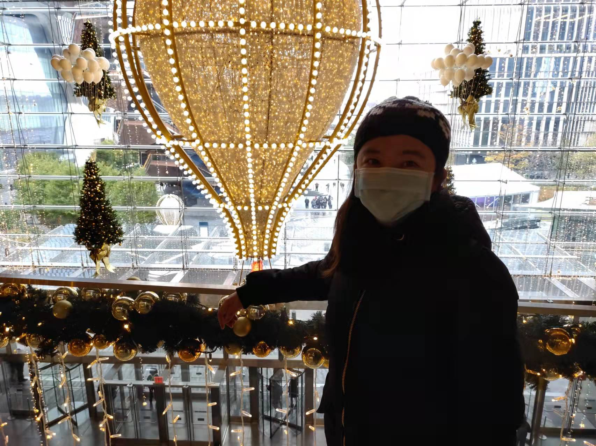

QCC/CUNY
Software Eng. Micro-Credential
Boot Camp
Lab 3
Date 01/06/2022
Yanfei WuI am a new immigrant, a senior Statistics and Quantitative Modeling.I am interested in Data Science and Software Developer as well. I hope to learn more tech skills to build up my resume and find a good job to support my family.
I hope I can pass the FRM Level1 and PMP certificate before I graduate.
After finish the Web Software Engineer Bootcamp, I hope to find an intership.
Linkedin Profile